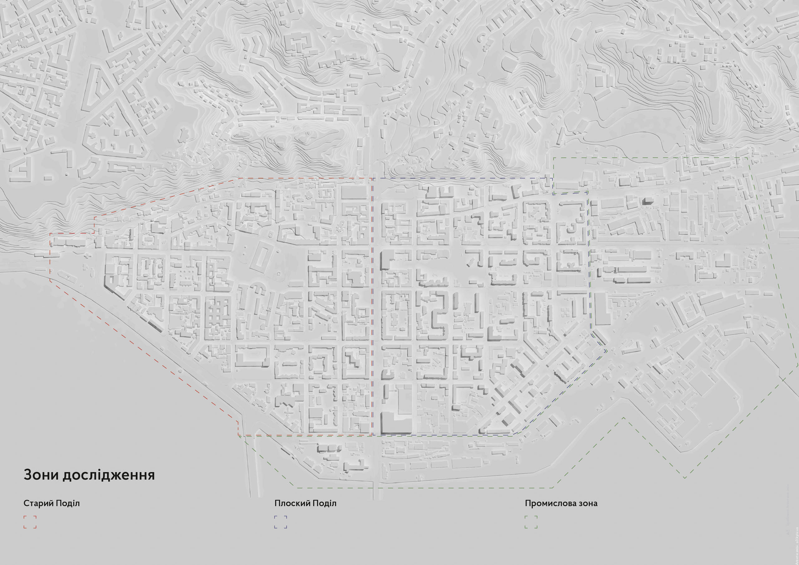

За підтримки компанії «Сага Девелопмент» ми провели дослідження та розробили концепцію розвитку публічних просторів Подолу. Під час дослідження ми розділили весь Поділ на три зони: Старий Поділ, Плоский Поділ та Промислова зона. Всі дослідження та аналіз проводили в межах цих територій.
Старий Поділ — не житловий район, а студенти з туристами — не основні його користувачі. Ба навіть тутешні мешканці, яких усього 14 000, не входять до їхнього числа. Основними користувачами Старого Подолу є офісні працівники, яких там близько 45 000. Вони зайняли територію між Поштовою та Контрактовою площами, витіснивши з неї всіх інших користувачів. Два центральні квартали — під контролем студентів, і це видно з їхньої чисельної переваги на Контрактовій площі.

За межею Верхнього та Нижнього Валів, на Плоскому Подолі, навпаки, мешканців набагато більше. Щоправда, вони сконцентровані в центрі, де сформували монофункціональні житлові райони. Офіси та промислові будівлі витіснили на периметр.
Наявні пабліки
За нормами, одному мешканцю має відповідати 6 м². озеленення. Якщо вважати, що таке озеленення має бути доступним для містян, і не враховувати зелень у закритих подвір’ях, на схилах і горах, то на Подолі зараз лише дві третини необхідної озелененої площі. Усього на Подолі проживає 43 000 мешканців, отже потрібно 258 000 м² зелених зон. Зараз доступними є лише 175 089 м².
За даними досліджень, партизанська боротьба з «алкоголіками та наркоманами» в публічному просторі, завдяки знесенню лавок і майданчиків, приносить неабиякі плоди. Територія Подолу практично винищена.
Доступних лавок не вистачає, дитячих майданчиків удвічі менше необхідного, спортивних майданчиків теж недостатньо. Окремі скупчення публічної інфраструктури ще лишились у житлових кварталах Плоского Подолу, але вони знаходяться в щільному кільці ніби напалмом випаленої території. Навіть те, що лишилось, зазвичай — у дуже поганому стані й тримається з останніх сил.
Через відсутність якісної соціальної інфраструктури ми потрапляємо в замкнене коло. Люди дедалі менше користуються публічним простором, бо він не пристосований для нормального життя, через що за ним доглядають ще гірше, і ще менше людей ним користується.
За розрахунком, на 43 000 мешканців повинно бути 30 100 м² дитячих майданчиків та 8 600 м² спортивних. Зараз є лише 14 829 та 6 314 м² майданчиків відповідно.
Зібравши докупи дані про стан публічного простору, ми виділили пабліки, якими зараз користуються відвідувачі Подолу. Більшість з них розташовано в межах вулиць Костянтинівської та Межигірської, які є найактивнішими. Також додали території, які могли б стати потенційними пабліками, якщо їх зробити доступними та наповнити публічною інфраструктурою.
Розділення приватності
Щоб публічними просторами було комфортно користуватись, містяни повинні розуміти, на приватній чи публічній території вони знаходяться. Зараз значна частина доступної території насправді є приватною, через що виникають конфлікти між людьми, які прийшли в публічний простір і мешканцями навколишніх будинків, які вважають подвір’я своїм. Простір повинен бути зрозуміло відмежований, щоб містяни знали, які правила діють в цьому просторі, і чи невдовзі не прийде охоронець і не вижене їх з приватної території.
На відміну від інших європейських міст, де забудова та приватність подвір’їв чітко визначені, на Подолі — повний безлад. Частину подільських кварталів закрито щільною забудовою, інші — відкрито для проходу, але всередині вони розрізані парканами.
Єдине, що об’єднує подільські квартали — це їхній завеликий розмір: вони майже вдвічі більші за типові європейські. Тому всередині подільських кварталів з’являється додаткова забудова. Часто це громадські або офісні будівлі, які огороджують свою територію парканами та закривають проїзди. З часом вже незрозуміло, яка територія доступна для відпочинку, і до якого майданчика є доступ.
На Подолі практично не залишилось кварталів із суцільною історичною забудовою. Єдина вулиця, де вона ще переважає — Сагайдачного. На інших — щільно перемішана з радянськими та сучасними будинками.
Такий подільський мікс має як добрі, так і негативні наслідки. Наприклад, більшість будівель, котрі з’явились за часів незалежності, імітують історичні, знецінюючи стиль справжніх старих будинків, які ще залишились. Але є й чудові приклади постмодерністських кварталів, про які мало хто знає: квартали Розенберга на Почайнинській та «4 квартали» на Костянтинівській.
Значна кількість забудови є пам’ятками архітектури, тому розподіл приватності простору стає ще складнішим завданням, адже майже нічого не можна змінити, і в кожному кварталі доводиться підлаштовуватись під наявні умови, щоб виокремити доступний містянам простір.
Ми розробили три принципи, на засадах яких можна було б доробити подільські квартали, щоб отримати додатковий публічний простір та розділити приватність. Ми розбили всі квартали за різними принципами, кожний — для власного типу забудови кварталу.
Дві цінності Подолу
Однак найбільші цінності знаходяться не на території квартальної забудови Подолу, а за її межами: це вода та гори, і зараз вони не мають зручного доступу для містян. При цьому три історичні київські гори — Замкова гора, Щекавиця та Хоревиця — за легендою, належали трьом братам-засновникам Києва.
Щоб створити комфортний маршрут та надати подолянам доступ до води та гір, треба дотримуватись трьох правил. Повинні бути зрозумілими напрямок і ціль, до якої йде людина. Маршрут до цілі теж має бути зрозумілим, а також цільним та не перериватись пусткою або забудовою. Маршрут має бути комфортним, і це стосуються не лише зручного покриття та освітлення, але й активних фасадів з вітринами та зручної інфраструктури, де можна було б відпочити. Загалом це повинен бути маршрут, яким користуватись хочеться, а не доводиться.
Активність вулиць
Зараз лише кілька кварталів у центрі району мають активні та дружні фасади з відкритими вітринами, дверима та привабливою активністю всередині. Натомість на більшості території Подолу знаходяться неактивні та непривабливі фасади, повз яких хочеться якнайскоріше промайнути: глухі паркани, стіни, закриті та заклеєні вікна.
У цих же місцях розташовані й основні скупчення вуличних бізнесів. При цьому на периметрі Подолу не знаходиться жодних активностей та магнітів, які б слугували орієнтиром для містян. Тому і більшість маршрутів Подолом сконцентровані лише в його центральній частині та не виходять за межі кількох кварталів.
Коло Подолу
Від Дніпра Поділ відрізаний зашумленим Набережно-Хрещатицьким шосе, а від Куренівки та гір — гаражами та промзоною. Єдиний комфортний зв’язок з Верхнім містом пролягає через Андріївський узвіз. При цьому іноді до гір ведуть сходи, а в окремих місцях вони навіть мають якісне покриття. Однак зручних спусків з гір немає, тому й єдиний маршрут відсутній.
Якщо відновити спуски з гір та об’єднати їх з наявними проходами, ми зв’яжемо три історичні гори Києва в один нагірний маршрут. Продовживши його до набережної, ми створимо єдиний пішохідний маршрут «Коло Подолу», який об’єднає дві цінності Подолу: гори та набережну.
На кожній з гір маршрут проходить через видові точки на Поділ, про які зараз знають лише окремі мешканці. Такі ж туристично привабливі оглядові точки знаходяться і на набережній, з якої відкривається вид на Труханів острів.
Маршрут Колом Подолу
Метробульвари
Основне скупчення пішоходів виникає на вулицях Сагайдачного, Костянтинівській, Межигірській та на Валах. Водночас ці вулиці є важливими транспортними магістралями. Щоб розділити конфлікт між транспортом та пішоходами, залишивши активність в межах цих вулиць, ми можемо використати недоліки наслідків будівництва метрополітену.
Під час прокладання синьої гілки на маршруті її пролягання знесли майже всі будівлі. Через це вздовж лінії метро лишилась купа вільного простору, який частково забудовано сучасними будівлями, а в інших його місцях розбито сквери або встановлено гаражі. Якщо прибрати перепони на шляху, створити зручні пішохідні переходи й об’єднати публічні простори, то можна створити єдиний маршрут, який стане магістральним зв’язком між двома частинами Кола Подолу.
Згідно з генпланом планується будівництво нової гілки метро на Троєщину. Щоб не наступати двічі на одні й ті ж граблі, пропонуємо одразу закласти бульвар по маршруту і нової гілки метрополітену.
Вали
Дерева потроху зникають з вулиць Подолу, а деякі квартали взагалі вже лишились без озеленення. Єдиним значним об’єктом озеленення досі лишається бульвар між Верхнім та Нижнім Валами. Щоб повернути дерева на подільські вулиці, потрібно додати ще 3500 дерев.
Якщо повернути озеленення в кількох місцях на бульварі, влаштувати зручні пішохідні переходи через вулиці та додати зв’язок бульвару з набережною, то Вали можуть стати ще одним магістральним пішохідним зв’язком між набережною та Верхнім містом через Вознесенський узвіз.
З гори до води
Щоб зробити гори та набережну справді доступними, потрібно відновити мережу зв’язків між квартальною забудовою Подолу та горами з набережною. У середині минулого століття такі стежки та проходи все ще зв’язували подільські вулиці. Однак з часом периметр забудувався, а гори заросли, через що зв’язки було втрачено. Якщо відновити колишні зв’язки, то майже з кожної вулиці можна було б створити маршрут, який зв’язав би гору та воду.
Екскурсія «Коло Подолу»
Тепер «Коло Подолу» — це ще й пішохідна екскурсія, яку ми проводимо в партнерстві з організацією «Інтересний Київ».